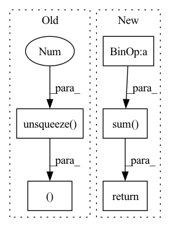

Pattern ID :1410
Before Change
if prediction.size() != target.size() or target.ndim < 3:
raise TypeError(fInputs must be of the same shape (batch_size,channels,samples)
got {prediction.size()} and {target.size()} instead)
prediction,target = prediction.unsqueeze(1 ),target.unsqueeze(1)
class Avergeloss(nn.Module):
def __init__(self,losses):After Change
scaling_factor = torch.sum(prediction*target,keepdim=True,dim=-1) / target_energy
target_projection = target * scaling_factor
noise = prediction - target_projection
ratio = torch.sum(target_projection**2,dim=-1) / torch.sum( noise** 2,dim=-1)
si_sdr = 10*torch.log10(ratio).mean(dim=-1)
if self.reduction == "sum":
si_sdr = si_sdr.sum()
elif self.reduction == "mean":
si_sdr = si_sdr.mean()
else:
pass
return si_sdr
In pattern: SUPERPATTERN
Frequency: 3
Non-data size: 5
Instances Fragment ID: 4069247
Project Name: shahules786/mayavoz
Commit Name: 838b7d2357c75c14e09bc7c4daef1518269fae63
Time: 2022-09-28
Author: shahules786@gmail.com
File Name: enhancer/loss.py
M Class Name: Si_SDR
N Class Name: Si_SDR
M Method Name: forward(3)
N Method Name: forward(3)
M Parent Class: nn.Module
N Parent Class: nn.Module
M File Name: enhancer/loss.py
N File Name: enhancer/loss.py
M Start Line: 49
M End Line: 49
N Start Line: 55
N End Line: 69
Before Change
gap = self.global_avg_pool(x)
gap_logit = self.global_avg_pool_fc(gap.view(x.size(0), -1))
gap_weight = self.global_avg_pool_fc.linear.weight.data.clone()
gap = x * gap_weight.unsqueeze(2).unsqueeze(3 )
gmp = self.global_max_pool(x)
gmp_logit = self.global_max_pool_fc(gmp.view(x.size(0), -1))
gmp_weight = self.global_max_pool_fc.linear.weight.data.clone()
gmp = x * gmp_weight.unsqueeze(2).unsqueeze(3)
cam_logit = torch.cat([gap, gmp], dim=1)
x = self.conv(cam_logit)
return x, cam_logit
class GammaBeta(nn.Module):
def __init__(self,
channels, reslAfter Change
gmp = self.maxpool(x)
gmp_logit = self.maxpool_fc(gmp.flatten(1))
gmp_weight = self.maxpool_fc.weight.detach().clone()
gmp = x * gmp_weight[:, :, None, None]
cam_logit = torch.cat([gap_logit, gmp_logit], dim=1)
x = torch.cat([gap, gmp], dim=1)
x = self.conv(x)
x = self.act(x)
heatmap = torch.sum( x, dim=1, keepdim=True)
return x, cam_logit, heatmap
class GammaBeta(nn.Module): Fragment ID: 4069245
Project Name: stomoya/animeface
Commit Name: a90fefdcfa84ce38987194a1ebd71b59eee30e0b
Time: 2022-03-23
Author: stomoya0110@gmail.com
File Name: implementations/UGATIT/model.py
M Class Name: CAM
N Class Name: CAM
M Method Name: forward(2)
N Method Name: forward(2)
M Parent Class: nn.Module
N Parent Class: nn.Module
M File Name: implementations/UGATIT/model.py
N File Name: implementations/UGATIT/model.py
M Start Line: 112
M End Line: 123
N Start Line: 42
N End Line: 58
Before Change
indices = torch.argmin(distances, dim=-1)
encodings = F.one_hot(indices, M).float()
quantized = torch.gather(self.embedding, 1, indices.unsqueeze(-1 ) .expand(-1, -1, D))
quantized = quantized.view_as(x)
if self.training:
self.ema_count = self.decay * self.ema_count + (1 - self.decay) * torch.sum(encodings, dim=1)
n = torch.sum(self.ema_count, dim=-1, keepdim=True)
self.ema_count = (self.ema_count + self.epsilon) / (n + M * self.epsilon) * n
dw = torch.bmm(encodings.transpose(1, 2), x_flat)
self.ema_weight = self.decay * self.ema_weight + (1 - self.decay) * dw
self.embedding = self.ema_weight / self.ema_count.unsqueeze(-1)
e_latent_loss = F.mse_loss(x, quantized.detach())
loss = self.commitment_cost * e_latent_loss
quantized = x + (quantized - x).detach()
avg_probs = torch.mean(encodings, dim=1)
perplexity = torch.exp(-torch.sum(avg_probs * torch.log(avg_probs + 1e-10), dim=-1))
return quantized.permute(1, 0, 3, 2).reshape(B, C, L), loss, perplexity.sum()
class ChannelNorm(nn.Module):
def __init__(self,After Change
x_flat = x.detach().reshape(-1, D)
distances = torch.addmm(torch.sum(self.embedding ** 2, dim=1) +
torch.sum( x_flat ** 2, dim=1, keepdim=True) ,
x_flat, self.embedding.t(),
alpha=-2.0, beta=1.0)
indices = torch.argmin(distances.float(), dim=-1)
encodings = F.one_hot(indices, M).float()
quantized = F.embedding(indices, self.embedding)
quantized = quantized.view_as(x)
if self.training:
self.ema_count = self.decay * self.ema_count + (1 - self.decay) * torch.sum(encodings, dim=0)
n = torch.sum(self.ema_count)
self.ema_count = (self.ema_count + self.epsilon) / (n + M * self.epsilon) * n
dw = torch.matmul(encodings.t(), x_flat)
self.ema_weight = self.decay * self.ema_weight + (1 - self.decay) * dw
self.embedding = self.ema_weight / self.ema_count.unsqueeze(-1)
e_latent_loss = F.mse_loss(x, quantized.detach())
loss = self.commitment_cost * e_latent_loss
quantized = x + (quantized - x).detach()
avg_probs = torch.mean(encodings, dim=0)
perplexity = torch.exp(-torch.sum(avg_probs * torch.log(avg_probs + 1e-10)))
return quantized, loss, perplexity
class CPCLoss(nn.Module): Fragment ID: 4069234
Project Name: bshall/vectorquantizedcpc
Commit Name: 535c95415d62ececde085e376f451b3b76e1b624
Time: 2020-05-01
Author: benji.l.shall@gmail.com
File Name: model.py
M Class Name: VQEmbeddingEMA
N Class Name: VQEmbeddingEMA
M Method Name: forward(2)
N Method Name: forward(2)
M Parent Class: nn.Module
N Parent Class: nn.Module
M File Name: model.py
N File Name: model.py
M Start Line: 21
M End Line: 54
N Start Line: 81
N End Line: 112